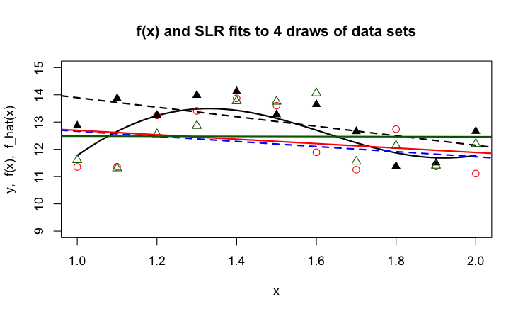
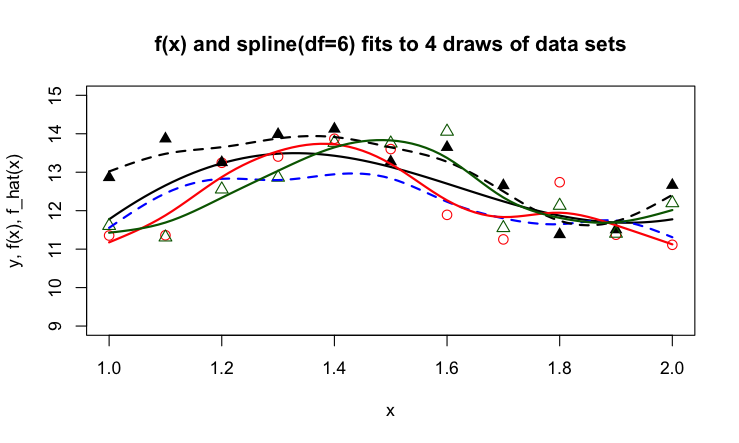
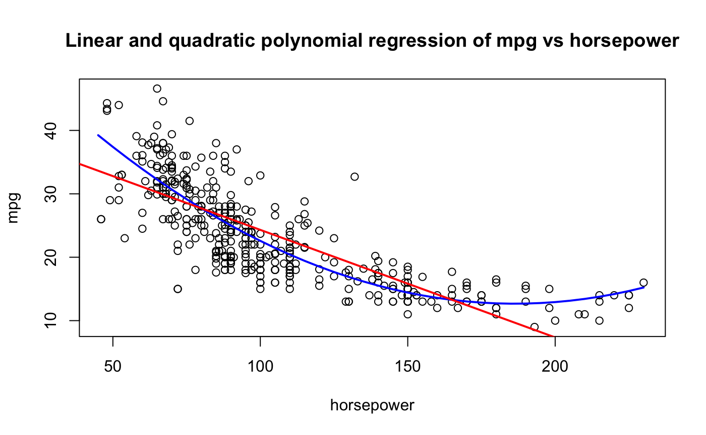

{kind=link}
import pandas as pd
import duckdb
con = duckdb.connect(database="ads.ddb")
fit = con.sql("SELECT * FROM fitness").df()
from sklearn.model_selection import train_test_split
train, test = train_test_split(fit,random_state=235,train_size=0.5)2 Bias Variance Tradeoff
The Bias-Variance tradeoff describes a fundamental tension in data science projects. The models we build are approximations because the true relationship between inputs and outputs is not known. If we work with statistical models, then the data-generating mechanism on which the model is based is also an approximation for the true—and unknown—process. The data we work with is typically the result of some selection mechanism. If we were to repeat the selection process different observations result. Apply the same method to a different set of data you will get different answers—there is variability in the results due to the inherent variability in the data.
2.1 A Simulation
To illustrate the concept, let’s start with a simulated example where we know the true function and collect multiple samples.
The following figure shows the relationship between an input variable \(X\) and some output function \(f(x)\). The function depicts the true relationship, the dots mark design points at which we collect observations. Because the data is inherently variable our sample observations will not fall on the black line. If the sample is unbiased, they should spread evenly about the true trend.
Suppose that we repeat the sampling process four times, drawing eleven observations each time.
This is an unrealistic situation. In real life, we do not know the solid function \(f(x)\) and we draw only one set of data, for example, we would work with only the black triangles or the blue dots in the previous figure.
Next, we train a model on the data and are considering two types of methods: a linear regression model and a smoothing spline.

The linear regression model is not flexible. It has only two parameters, the intercept of the vertical line at \(x = 0\) and the slope of the line. The lines do not follow the curved trend in the function \(f(x)\). Because of this rigidity, the four lines are somewhat similar to each other, they do not show a high degree of variability from sample to sample.

The splines show more flexibility than the linear regression lines and follow the observed data more closely. The curviness of the true function \(f(x)\) is echoed in the curviness of the splines, but some splines seem to try to connect the dots more than they are picking up the true trend. Because the splines follow the observed data more closely, the four functions show more variability from sample to sample than the linear regression lines.
Suppose the task is to develop a model that predicts a new observation well, one that did not participate in fitting the model. The model needs to generalize to previously unseen data. Should we choose linear regression or smoothing splines as our method? A method that is highly variable because it follows the data too closely will not generalize well—its predictions will be off because they are highly variable. A method that is not flexible enough also does not generalize well—its predictions will be off because the model is not correct.
Mathematically, we can express the problem of predicting a new observation as follows. Since the true function is unknown, it is also unknown at the new data location \(x_{0}\). However, we observed a value \(y\) at \(x_{0}\). Based on the model we choose the function can be predicted at \(x_{0}\). But since we do not know the true function \(f(x)\), we can only measure the discrepancy between the value we observe and the value we predicted; this quantity is known as the error of prediction.
| Quantity | Meaning | Measurable |
|---|---|---|
| \(f(x)\) | The true but unknown function | No |
| \(f\left( x_{0} \right)\) | The value of the function at a data point \(x_0\) that was not part of fitting the model | No |
| \(\widehat{f}\left( x_{0} \right)\) | The estimated value of the function at the new data point \(x_{0}\) | Yes |
| \(f\left( x_{0} \right) - \widehat{f}\left( x_{0} \right)\) | The function discrepancy | No |
| \(y -\widehat{f}\left( x_{0} \right)\) | The error of prediction | Yes |
Multiple components contribute to the prediction error: the variability of the data \(y\), the discrepancy between \(f\left( x_{0} \right)\) and \(\widehat{f}\left( x_{0} \right)\), and the variability of the function \(\widehat{f}\left( x_{0} \right)\). The variability of \(y\) is also called the irreducible variability or the irreducible error because the observations will vary according to their natural variability. Once we have decided which attribute to observe, how to sample it, and how to measure it, this variability is a given. The other two sources relate to the accuracy and precision of the prediction; or, to use statistical terms, the bias and the variance.
2.2 Accuracy and Precision
In the context of measuring devices, accuracy and precision are defined as
Accuracy: How close are measurements to the true value
Precision: How close are measurements to each other
To demonstrate the difference between accuracy and precision, the dart board bullseye metaphor is helpful. The following figure shows four scenarios of shooting four darts each at a dart board. The goal is to hit the bullseye in the center of the board; the bullseye represents the true value we are trying to measure. A is the result of a thrower who is neither accurate nor precise. The throws vary greatly from each other (lack of precision), and the average location is far from the bullseye. B is the result of a thrower who is inaccurate but precise. The throws group tightly together (high precision) but the average location misses the bullseye (the average distance from the bullseye is not zero). The thrower with pattern C is not precise, but accurate. The throws vary widely (lack of precision) but the average distance of the darts from the bullseye is close to zero—on average the thrower hits the bullseye. Finally, the thrower in D is accurate and precise; the darts group tightly together and are centered around the bullseye.
We see that both accuracy and precision describe not a single throw, but a pattern over many replications. In statistical terms, this long-run behavior is the expected value.
What is the connection between accuracy and precision and expectations of random variables? The accuracy of a statistical estimator is the proximity of its expected value from the target value.
Note
We use the term target here to describe the quantity we are interested in estimating. Please do not confuse this with the target variable in a statistical model. A function of the target variable such as its mean at \(x_0\), \(\text{E}[Y | x_0]\) might well be the target we are trying to estimate.
An estimator that is not accurate is said to be biased.
Definition: Bias
An estimator \(h\left( \textbf{Y}\right)\) of the parameter \(\theta\) is said to be biased if its expected value does not equal \(\theta\).
\[\text{Bias}\left\lbrack h\left( \textbf{Y}\right);\theta \right\rbrack = \text{E}\left\lbrack h\left( \textbf{Y}\right) - \theta \right\rbrack = \text{E}\left\lbrack h\left( \textbf{Y}\right) \right\rbrack - \theta\]
The last equality in the definition follows because the expected value of a constant is identical to the constant. In the dartboard example, \(\theta\) is the bullseye and \(h\left( \textbf{Y}\right)\) is the distance of the dart from the bullseye. The bias is the expected value of that distance, the average across many repetitions (dart throws).
2.3 Mean Squared Error
With these definitions in place, let’s return to the question whether to favor the linear regression or the smoothing spline to predict a new observation at \(x_0\)? The model can be written as
\[Y = f(x) + \epsilon\]
where \(\epsilon\) is a random variable with mean 0 and variance \(\sigma^{2}\), the irreducible variability. The observational model for \(n\) observed data points is
\[Y_{i} = f\left( x_{i} \right) + \epsilon_{i}\ \ \ \ \ \ \ \ \ i = 1,\ldots,n\]
The \(Y_{i}\) are observed unless there are missing values. However, for a new observation this might not be the case. The model for the new observation is no different than the previous model
\[Y_{0} = f\left( x_0 \right) + \epsilon\]
but only \(x_0\) is known.
There are two possible targets for prediction: \(f\left( x_{0} \right)\) and \(f\left( x_{0} \right) + \epsilon\). The former is the expected value of \(Y_{0}\): \[\text{E}\left\lbrack Y_{0} \right\rbrack = f\left( x_0 \right) + \text{E}\lbrack\epsilon\rbrack = f\left( x_{0} \right)\]
This is a fixed quantity (a constant), not a random variable. The latter is a random variable. Interestingly, the estimator of both quantities is the same, \(\widehat{f}\left( x_0 \right)\). The difference comes into play when we consider the uncertainty associated with estimating \(f\left( x_0 \right)\) or predicting \(f\left( x_0 \right) + \epsilon\)—more on this later.
We need a way to express the discrepancy between the estimator and the target that incorporates the estimator’s accuracy and precision—this is the mean-squared error.
Definition: Mean-squared error (MSE)
The mean-squared error of estimator \(h\left( \textbf{Y}\right)\) for target \(\theta\) is the expected value of the squared differences between estimator and target
\[ \text{MSE}\left\lbrack h\left( \textbf{Y}\right);\ \theta \right\rbrack = \text{E}\left\lbrack \left( h\left( \textbf{Y}\right) - \theta \right)^{2} \right\rbrack \]
The mean-squared error is the expected square deviation between the estimator and its target. Expanding the right hand side and arranging terms we can write the MSE as the sum of two components
\[\begin{align*} \text{MSE}(h(\textbf{Y});\theta) &= \text{E} \left [ \left( h(\textbf{Y}) - \theta \right)^2\right] \\ &= \text{E} \left [h(\textbf{Y})^2 - 2 h(\textbf{Y}) \theta + \theta^2\right ]\\ &= \text{E} \left [h(\textbf{Y})^2 - \mu^2 + \mu^2 - 2 h(\textbf{Y}) \theta + \theta^2\right ]\\ &= \text{E} \left [h(\textbf{Y})^2 \right ] - \mu^2 + \mu^2 - 2 \mu \theta + \theta^2 \\ &= \text{E} \left [h(\textbf{Y})^2 \right ] - \mu^2 + (\mu - \theta)^2 \\ &= \text{Var}[h(\textbf{Y})] + \text{Bias}(h(\textbf{Y});\theta)^2 \end{align*}\]
Tip
We use a common trick in the third line of this derivation, to add and subtract the same quantity: \(\mu^2\). This allows completion of the squares that lead to the variance and the squared bias terms.
The mean-squared error decomposes into the variance of the estimator, \(\text{Var}[h(\textbf{Y})]\), and the squared bias between the estimator and the target it is trying to estimate. The MSE equals the variance only if the estimator is unbiased. The bias enters in squared terms because the variance is measured in squared units and because negative and positive bias discrepancies should not balance out.
If we apply the MSE definition to the problem of using estimator \(\widehat{f}\left( x_0 \right)\) to predict \(f\left( x_0 \right)\),
\[\text{MSE}\left\lbrack \widehat{f}\left( x_{0} \right);f\left( x_{0} \right)\ \right\rbrack = \text{Var}\left\lbrack \widehat{f}\left( x_{0} \right) \right\rbrack + \text{Bias}\left\lbrack \widehat{f}\left( x_{0} \right);f\left( x_{0} \right) \right\rbrack^{2}\]
we see how the variability of the estimator and its squared bias contribute to the overall MSE. Similarly, if the goal is to predict a new observation, rather than its mean, the expression becomes
\[\text{MSE}\left\lbrack \widehat{f}\left( x_{0} \right);Y_{0} \right\rbrack\text{ = MSE}\left\lbrack \widehat{f}\left( x_{0} \right);f\left( x_{0} \right) + \epsilon\ \right\rbrack = \text{Var}\left\lbrack \widehat{f}\left( x_{0} \right) \right\rbrack + \text{Bias}\left\lbrack \widehat{f}\left( x_{0} \right);f\left( x_{0} \right) \right\rbrack^{2} + \sigma^{2}\]
You now see why \(\sigma^{2}\) is called the irreducible error. Even if the estimator \(\widehat{f}\left( x_{0} \right)\) would have no variability and be unbiased, the mean-squared error in predicting \(Y_{0}\) can never be smaller than \(\sigma^{2}\).
Example: \(k\)-Nearest Neighbor Regression
The \(k\)-nearest neighbor (\(k\)-NN for short) regression estimator is a simple estimator of the local structure between a target variable \(y\) and an input variable \(x\). The value \(k\) represents the number of values in the neighborhood of some input \(x_{0}\) that are used to predict \(y\). The extreme case is \(k = 1\), the value of \(f\left( x_{0} \right)\) is predicted as the \(y\)-value of the observation closest to \(x_{0}\).
Suppose our data come from a distribution with mean \(f(x)\) and variance \(\sigma^{2}\). The mean-square error decomposition for the \(k\)-NN estimator is then
\[\text{MSE}\left\lbrack \widehat{f}\left( x_{0} \right);Y_{0} \right\rbrack\text{ = }\frac{\sigma^{2}}{k}{+ \left\lbrack f\left( x_{0} \right) - \frac{1}{k}\sum_{}^{}Y_{(i)} \right\rbrack}^{2} + \sigma^{2}\]
where \(y_{(i)}\) denotes the \(k\) observations in the neighborhood of \(x_{0}\).
The three components of the MSE decomposition are easily identified:
\(\sigma^{2}/k\) is the variance of the estimator, \(\text{Var}\left\lbrack \widehat{f}\left( x_{0} \right) \right\rbrack\). Not surprisingly, it is the variance of the sample mean of \(k\) observations drawn at random from a population with variance \(\sigma^{2}\).
\(\left\lbrack f\left( x_{0} \right) - \frac{1}{k}\sum Y_{(i)} \right\rbrack^{2}\) is the squared bias component of the MSE.
\(\sigma^2\) is the irreducible error, the variance in the population from which the data are drawn.
While we cannot affect the irreducible error \(\sigma^{2}\), we can control the magnitude of the other components through the choice of \(k\). The variance contribution will be largest for \(k = 1\), when prediction relies on only the observation closest to \(x_{0}\). The bias contribution for this 1-NN estimator is \(\left\lbrack f\left( x_{0} \right) - Y_{(1)} \right\rbrack^{2}\).
As \(k\) increases, the variance of the estimator decreases. For a large enough value of \(k\), all observations are included in the “neighborhood” and the estimator is equal to \(\overline{Y}\). If \(f(x)\) changes with \(x\), the nearest neighbor method will then have smallest variance but large bias.
If we want to minimize the mean-squared error, we can strive for estimators with low bias and low variance. If we cannot have both, how do we balance between the bias and variance component of an estimator? That is the bias-variance tradeoff.
Statisticians resolve the tension with the UMVUE principle. Uniformly minimum-variance unbiased estimation requires to first identify unbiased estimators, those for which \(\text{Bias}\lbrack \widehat{f}\left( x_{0} \right);f\left( x_{0} \right) \rbrack = 0\), and then to select the estimator with the smallest variance among the unbiased estimators. According to UMVUE you will never consider a biased estimator. It is comforting to know that on average the estimator will be on target. This principle would select estimator C in the dartboard example over estimator B because the latter is biased. If you have only one dart left and you need to get as close to the bullseye as possible, would you ask player B or player C to take a shot for the team?
UMVU estimators are not necessarily minimum mean-squared error estimators. It is possible that a biased estimator has a sharply reduced variance so that the sum of variance and squared bias is smaller than the variance of the best unbiased estimator. If we want to achieve a small mean-square error, then we should consider estimators with some bias and small variance. Resolving the bias-variance tradeoff by eliminating all biased estimators does not lead to the “best” predictive models. Of course, this depends on our definition of “best”.
In practice, \(f\left( x_{0} \right)\) is not known and the bias component \(\text{Bias}\lbrack \widehat{f}\left( x_{0} \right);f\left( x_{0} \right) \rbrack\) cannot be evaluated by computing the difference of expected values. For many modeling techniques we can calculate—or at least estimate— \(\text{Var}\lbrack \widehat{f}\left( x_{0} \right) \rbrack\), the variance component of the MSE. Those derivations depend on strong assumptions about distributional properties and the correctness of the model. So, we essentially need to treat the MSE as an unknown quantity. Fortunately, we can estimate it from data.
Definition: Mean-squared prediction error (MSPE)
The mean-squared prediction error (MSPE) is the average squared prediction error in a sample of \(n\) observations,
\[\text{MSPE} = \frac{1}{n}\sum_{i=1}^n\left( y_i - \widehat{f}\left( x_i \right) \right)^{2}\]
Taking the sample average replaces taking formal expectations over the distribution of \(( Y - \widehat{f}(x) )^2\).
Back to choosing between the regression and spline models. If we denote the two approaches \(\widehat{f}_{r}(x)\) and \(\widehat{f}_{s}(x)\), respectively, selecting the winning model based on the mean-squared prediction error reduces to picking the model with the smaller MSPE:
\[\frac{1}{n}\sum_{i = 1}^{n}\left( y_{i} - {\widehat{f}}_{r}\left( x_{i} \right) \right)^{2}\]
or
\[\frac{1}{n}\sum_{i = 1}^{n}\left( y_{i} - {\widehat{f}}_{s}\left( x_{i} \right) \right)^{2}\]
As we will see, this is not without problems. These expressions are calculating the MSPE by averaging over the data points used in training the model; we call this the MSPE of the training set or MSETr for short. To identify models that generalize well to new observations, it is recommended to calculate the MSPE across a test set of observations that was not used to fit the model; this is called the MSPE of the test set or the MSETe for short.
We will discuss training, test, and validation data sets in more detail below.
Whether you are working with MSPE in a regression context or MCR in a classification problem, the goal is to develop a model that is neither too complex nor too simple. We want to avoid over- and underfitting the model.
2.4 Overfitting and Underfitting
The preceding discussion might suggest that flexible models such as the smoothing spline have high variability and that rigid models such as the simple linear regression model have large bias. This generalization does not necessarily hold although in practice it often works out this way. The reason for this is not that simple linear regression models are biased—they can be unbiased. The reason why flexible models tend to have high variance and low bias and rigid models tend to have low variance and high bias has to do with overfitting and underfitting.
An overfit model follows the observed data \(Y_{i}\) too closely and does not capture the mean trend \(f(x)\). The overfit model memorizes the training data too much. When you predict a new observation with an overfit model that memory causes high variability. Remember that the variability we are focusing on here is the variability across repetitions of the sample process. Imagine drawing 1,000 sets of \(n\) observations, repeating the model training and predicting from each model at the new location \(x_{0}\). We now have 1,000 predictions at \(x_{0}\). Because the overfit model follows the training data too closely, its predictions will be variable at \(x_{0}\).
An underfit model, on the other hand, lacks the flexibility to capture the mean trend \(f(x)\). Underfit models result, for example, when important predictor variables are not included in the model.
The most extreme case of overfitting a model is the saturated model. It perfectly predicts the observed data. Suppose you collect only two pairs of \((x,y)\) data: (1,0) and (2,1). A two-parameter straight line model will fit these data perfectly. The straight line has an intercept of –1 and a slope of +1. It passes through the observed points and the mean-squared prediction error is zero.
Saturated models are not very interesting, they are just a re-parameterization of the data, capturing both signal \(f(x)\) and noise \(\epsilon\). A useful model separates the signal from the noise. Saturated models are used behind the scenes of some statistical estimation methods, for example to measure how much of the variability in the data is captured by a model—this type of model metric is known as the deviance. Saturated models are never the end goal of data analytics.
On the other extreme lies the constant model; it does not use any input variables. It assumes that the mean of the target variable is the same everywhere:
\[Y_{i} = \mu + \epsilon_{i}\]
This model, also known as the intercept-only model, is slightly more useful than the saturated model. It is rarely the appropriate model in data science applications; it expresses the signal as a flat line, the least flexible model of all.
In our discussion of the model building process during the data science project life cycle we encountered an example of pharmacokinetic data, 500 observations on how a drug is absorbed and eliminated by the body over time (\(t\)). The data are replayed in the next figure along with the fit of the constant model. The constant model underpredicts the drug concentration between times \(t = 3\) and \(t = 12\) and overpredicts everywhere else.
Suppose we draw 1,000 sets of \(n = 500\) observations, fit the constant model to each, and predict at the new time \(t_{0}\). Because the constant model does not depend on time, we get the same predicted value regardless of the value of \(t_{0}\). In each sample of size \(n\), the predicted value will be the sample mean, \(\overline{y} = \frac{1}{500}\sum_{}^{}y_{i}\). The variability of the 1,000 predictions will be small; it is the variance of the sample mean:
\[\text{Var}\left\lbrack \widehat{f}\left( x_0 \right) \right\rbrack = \frac{\sigma^2}{500}\]
If the true model does depend on \(t\)—and the plot of the data suggests this is the case—the bias of the predictions will be large. The mean-squared prediction error is dominated by the squared bias component in this case.
Somewhere between the two extremes of a hopelessly overfit saturated model and a hopelessly underfit constant model are models that capture the signal \(f(x)\) well enough without chasing the noisy signal \(f(x) + \epsilon\) too much. Those models permit a small amount of bias if that results in a reduction of the variance of the predictions.
To summarize,
Overfit models do not generalize well because they follow the training data too closely. They tend to have low bias and a large variance.
Underfit models do not generalize well because they do not capture the salient trend (signal) in the data. They tend to have high bias and low variance.
A large mean-squared prediction error can result in either case but is due to a different cause.
For a small mean-squared prediction error you need to have small bias and small variance.
In practice, zero-bias methods with high variance are rarely the winning approaches. The best MSPE is often achieved by allowing some bias to substantially decrease the variance.
The danger of overfitting is large when models contain many parameters, and when the number of parameters \(p\) is large relative to the sample size \(n\). When many attributes (inputs) are available and you throw them all into the model, the result will likely be an overfit model that does not generalize well. It will have a large prediction error. In other words, there is a cost to adding unimportant information to a model. Methods for dealing with such high-dimensional problems play an important role in statistics and machine learning and are discussed in detail in a more advanced section. We mention here briefly:
Feature Selection: Structured approaches that use algorithms to determine which subset of the inputs should be in the model. The decision is binary in that an input is either included or excluded. Also known as variable selection.
Regularization: Deliberately introducing some bias in the estimation through penalty terms that control the variability of the model parameters which in turn controls the variability of the predictions. The parameters are shrunk toward zero in absolute value compared to an unbiased estimator—regularization is thus also known as shrinkage estimation. The Lasso methods can shrink parameters to zero and thus combines regularization with feature selection. The Ridge regression methods also applies a shrinkage penalty but allows all inputs to contribute.
Ensemble Methods: Ensemble methods combine multiple methods into an overall, averaged prediction or classification. Ensembles can be homogeneous, where the methods are the same, or heterogeneous. An example of a homogeneous ensemble is a bagged decision tree, where several hundred individual trees are trained independently and the predictions from the trees are averaged to obtain an overall predicted value. Due to averaging, the variance of the ensemble estimator is smaller than any individual estimator. Bagging and boosting are common ensemble methods to reduce variance.
2.5 Training, Testing, and Validation
Training, testing, and validation refers to different stages of the model building process and also to different types of data used in the model building process.
Training Data
Training data is the set of \(n\) observations used to train the model. The training data is useful to diagnose whether model assumptions are met, for example,
does the model adequately describe the mean trend in the (training) data,
are distributional assumptions such as normality of the model errors met,
is it reasonable to assume that the data points are uncorrelated (or even independent)
We can also use the training data after the model fit to detect data points that have a high influence of the analysis—that is, the presence of those points substantially affects an important aspect of the model. And based on the training data we can study the interdependence of the model inputs and whether those relationships affect the model performance negatively.
The diagnostic techniques just mentioned rely on
Residual diagnostics
Case-deletion and influence diagnostics
Collinearity diagnostics
These diagnostics are all very helpful, but they do not answer an important question: how well does the model generalize to observations not used in training the model; how well does the model predict new observations? We also need to figure out, given a single training data set, how to select the values for the hyperparameters of the various techniques.
Definition: Hyperparameter
A hyperparameter is a variable that controls the overall configuration of a statistical model or machine learning technique. Hyperparameters are sometimes referred to as external parameters, whereas the parameters of the model function (slopes, intercepts, etc.) are called the internal parameters.
Hyperparameters are not directly derived from the data, they need to be set to values before the model can be trained; their values can greatly impact the performance of the model. The process of determining the values for hyperparameters given a particular data set is called hyperparameter tuning.
Hyperparameters include, for example,
The number of terms in a polynomial model
The smoothing parameters in non-parametric regression models
The bandwidth in kernel-based estimation methods such as LOESS, kernel regression, local polynomial regression
The shrinkage penalty in Lasso, Ridge regression, smoothing splines
The depth of decision trees
The number \(k\) in \(k\)-nearest neighbor methods
The convergence rate and other tolerances in numerical optimization
The learning rate, number of nodes, and number of layers in neural networks
We can calculate the MSPE or MCR of the trained model, depending on whether we are dealing with a regression or a classification problem. Doing so for the training data has some serious drawbacks. We have seen earlier that saturated models have no prediction error since they perfectly connect the dots in the data. Trying to minimize the MSPE based on the training data (MSETr) invariably leads to overfit models since you can always drive MSETr toward zero.
Test Data
To measure the true predictive performance of a model we need to apply the model to a different set of observations; a set that was not used in training the model. This set of observations is called the test data set. With a test data set we can measure how well the model generalizes and we can also use it to select the appropriate amount of flexibility of the model. The following graph shows the general behavior of test and train mean-squared prediction error as a function of model flexibility and complexity.
The MSPE of the test data set is on average higher than the MSPE of the training data set. Since these are random variables, it can happen in a particular application that the test error is lower than the training error, but this is rare. The model complexity/flexibility is measured here by the number of inputs in the model. As this number increases, the MSETr decreases toward zero. The MSETe, on the other hand, first decreases, reaches a minimum, and increases again. The MSETe is high for models with few parameters because of bias, it increases with model flexibility past the minimum because of variability. The two contributors to the MSE work at different ends of the spectrum—you find models that balance bias and variance somewhere in-between.
The big question is: where do we get the test data?
Validation Data
Before discussing ways to obtain test data sets, a few words about another type of data set, the validation data. The terms test data and validation data are often used interchangeably, but there is a difference. Test data represents new data that should otherwise be representative of the training data. A test data set drawn at random from the training data set typically satisfies that.
Validation data can be a separate data set with known properties, for example, a benchmark data set. Such a data set can be used to compare approaches from different model families, for example, a random forest and a neural network. It can be used to measure model performance against known conditions (typical and atypical) to ensure a model works properly.
Example: Computer Vision
ImageNet is a data set of images organized according to the WordNet hierarchy. ImageNet provides an average of 1,000 images for each meaningful concept in WordNet. The data set is used as a benchmark for object categorization algorithms and currently contains over 14 million images that are labeled and annotated by humans.
The most used subset of ImageNet data is the Large Scale Visual Recognition Challenge (ILSVRC) data set. It is used to evaluate object classification algorithms since 2010. The data sets for the challenges are themselves broken down into training, test, and validation sets.
The IARPA Janus Benchmark (IJB) datasets contain images and videos used in face detection and face recognition challenges. There are several data sets, for example IJB-B consists of 1,845 subjects with human-labeled face bounding boxes, eye & nose location, and metadata such as skin tone and facial hair for 21,798 still images and 55,026 video frames. The collection methodology for the IJB-B data set is documented .
Test data tells us how well a model performs, validation data tells us which model is best.
Example: Programming Competition
Suppose we want to send one student from a group of students to a programming competition. The goal is to win the competition. In training the students encounter problems from past programming competitions.
Students that do well during training are not necessarily the best candidates for the competition. We need to find out whether a student does well because they memorized the solution or whether they truly understand how to solve the programming problem. To answer this a validation step is used and a set of new programming problems is presented, specifically designed to test student’s ability to apply general concepts in problem solving. At the end of the validation step we have identified the best student to represent the group at the competition.
We are not done, however. Does the best student in the group have a chance in the competition? We now enter the testing phase to answer the question: how well will the best student perform? After administering a real test with new problems, we find out that the student scores above 90%: they are ready for the competition. If, however, we find out that the student scores below 25%, we will not send them to the competition. Instead, we return to the drawing board with a new training procedure and/or a set of new training problems.
Validation and test data are often used interchangeably because the test data is often used as the validation data. The questions “which model is best?” and “how well does the model perform?” are answered simultaneously: the best model is the one that achieves the best metric on the test data set. Often that results in choosing the model with the lowest MSETe or MCRTe.
Hold-out Sample
Let’s return to the important question: where do we find the test data set?
Maybe you just happen to have a separate set of data lying around that is just like the training data, but you did not use it. Well, that is highly unlikely.
Typically, we use the data collected, generated, or available for the study to carve out observations for training and testing. This is called a hold-out sample, a subset of the observations is held back for testing and validation. If we start with \(n\) observations, we use \(n - m\) observation to train the model (the training data set), and \(m\) observations to test/validate the model.
In Python you can create this train:test split with the train_test_split() function in sklearn. The following statements load the fitness data from DuckDB into a Pandas DataFrame and split it into two frames of 15 and 16 observations.
The random_state= parameter sets the seed for the random number generator. By setting this to a non-zero integer, the random number generator starts to produce numbers with that seed value. This makes the selection reproducible, subsequent runs of the program will produce identical—yet random—results. The train_size= parameter specifies the proportion of observations in the training set—if the value is between 0 and 1—or the number of observations in the training set—if the value is an integer > 1.
train.shape(15, 7)train.describe() Age Weight Oxygen ... RestPulse RunPulse MaxPulse
count 15.000000 15.000000 15.000000 ... 15.000000 15.00000 15.000000
mean 49.666667 75.539333 47.693067 ... 52.733333 171.00000 174.133333
std 4.654747 8.076112 4.516180 ... 7.731814 10.96097 9.210760
min 40.000000 59.080000 39.203000 ... 40.000000 148.00000 155.000000
25% 48.000000 70.760000 45.215500 ... 48.000000 166.00000 169.000000
50% 51.000000 76.320000 46.672000 ... 51.000000 170.00000 172.000000
75% 53.000000 80.400000 49.772000 ... 58.500000 178.00000 180.500000
max 57.000000 91.630000 59.571000 ... 67.000000 186.00000 188.000000
[8 rows x 7 columns]test.shape(16, 7)test.describe() Age Weight Oxygen ... RestPulse RunPulse MaxPulse
count 16.000000 16.000000 16.000000 ... 16.000000 16.000000 16.000000
mean 45.812500 79.230625 47.078375 ... 54.125000 168.375000 173.437500
std 5.140931 8.415590 6.125977 ... 7.701731 9.721968 9.408994
min 38.000000 61.240000 37.388000 ... 45.000000 146.000000 155.000000
25% 43.750000 73.285000 43.665750 ... 48.000000 162.000000 167.500000
50% 44.500000 80.170000 47.023500 ... 53.500000 169.000000 174.000000
75% 48.500000 86.295000 50.040750 ... 59.000000 174.500000 180.000000
max 57.000000 91.630000 60.055000 ... 70.000000 186.000000 192.000000
[8 rows x 7 columns]The two data sets have very similar properties as judged by the descriptive statistics. If the goal is to develop a model that can predict the difficult to measure oxygen intake from easy to measure attributes such as age, weight, and pulse, then we would use the 15 observations in the train frame to fit the model and the 16 observations in the test frame to evaluate the model.
If we cull the test data from the overall data, how should we determine an appropriate size for the test data? The previous example used a 50:50 split, would it have mattered if we had taken a 20:80 or a 90:10 split? For the two data sets to serve their respective functions, you need enough observations in the training data set to fit the model well enough so it can be tested, and you need enough observations in the test data set to produce a stable estimate of MSETe. In practice splits that allocate between 50 and 90% of the observations to the training data set are common.
With small training proportions you run the risk that the model cannot be fit and/or that the data does not support the intended model. For example, with a 10:90 train:test split in the fitness example, the training data contains only 3 observations and evaluating the effect of all input variables on oxygen intake is not possible—the model is saturated after three inputs are in the model. With categorical inputs, you need to make sure that the training and test data sets contain all the categories. For example, if you categorize age into four age groups and only three groups are present in the training data after the split, the resulting model no longer applies to a population with four age groups.
From this discussion we can glean the general advantages and disadvantages of hold-out test samples.
| Advantages | Disadvantages |
|---|---|
| Easy to do | Involves a random selection; results change depending on which observations selected |
| No separate test data set needed | Potentially large variability from run to run, especially for noisy data |
| A general method that can be applied regardless of how model performance is measured | Must decide how large to make the training (test) set |
| Reproducible if fixing random number seed | An observation is used either for testing or for training |
| Tends to overestimate the test error compared to cross-validation methods |
The last two disadvantages in the table weigh heavily. Since we cannot rely on the training error for model selection, we are sacrificing observations by excluding them from training. At least we expect then a good estimate of the test error. The reason for overestimating the true test error with a train:test hold-out sample is that models tend to perform worse when trained on fewer observations. Reducing the size of the training data set results in less precise parameter estimates which in turn increases the variability of predictions.
To compare the variability of the hold-out sample method with other techniques, we draw on the Auto data set from ISLR2 (An Introduction to Statistical Learning by James et al.). The data comprise information on fuel mileage and other vehicle attributes of 392 automobiles. Suppose we want to model mileage as a function of horsepower. The next figure shows the raw data and fits of a linear and quadratic model
\[\text{mpg}_{i} = \beta_{0} + \beta_{1}\text{hp}_{i} + \epsilon_{i}\]
\[\text{mpg}_{i} = \beta_{0} + \beta_{1}\text{hp}_{i} + {\beta_{2}\text{hp}_{i}^{2} + \epsilon}_{i}\]

A simple linear regression—the red line in the figure—does not seem appropriate. The model does not pick up the curvature in the underlying trend. A quadratic model seems more appropriate. Can this be quantified? What about a cubic model
\[\text{mpg}_{i} = \beta_{0} + \beta_{1}\text{hp}_{i} + {\beta_{2}\text{hp}_{i}^{2} + \beta_{3}\text{hp}_{i}^{3} + \epsilon}_{i}\]
Figure 2.10 shows the hold-out test errors for all polynomial models up to degree 10. The simple linear regression (SLR) model has degree 1 and is shown on the left. The test error is large for the SLR model and for the 10-degree polynomial. The former is biased as can be seen from the previous graph. The latter is too wiggly and leads to a poor test error because of high variability. The test error is minimized for the quadratic model but we note that the test error is also low for degrees 7—9.
Based on this result we would probably choose the second-degree polynomial. To what extent is this decision the result of having selected the specific 196 observations in the 50:50 split? We can evaluate this by repeating the sampling process a few more times. The next graph shows the results of 9 other 50:50 random splits.
The variability in the results is considerable. Most replications would select a second-degree polynomial as the model with the lowest MSETe, but several replications achieve a smallest MSETe for much higher degree polynomials (5th degree, 7th degree, etc.).
Having spent time, energy, resources, money to build a great data set, it seems wasteful to use some observations only for training and the others only for testing. Is there a way in which we can use all observation for training and testing and still get a good estimate (maybe even a better estimate) of the test error?
How about the following proposal:
Split the data 50:50 into sets \(t_1\) and \(t_2\)
Use \(t_1\) as the training data set and determine the mean-squared prediction error from \(t_{2}\), call this MSETe(\(t_{2}\))
Reverse the roles of \(t_1\) and \(t_2\), using \(t_2\) to train the model and \(t_1\) to compute the test error MSETe(\(t_1\))
Compute the overall test error as the average MSETe = 0.5 x (MSETe(\(t_1\)) + MSETe(\(t_2\)))
Each observation is used once for training and once for testing. Because of averaging, the combined estimate of test error is more reliable than the individual test errors.
This proposal describes a special case of cross-validation, namely 2-fold cross-validation.
2.6 Cross-validation
Cross-validation is a general method to measure the performance of a model. It is commonly used for predictive models to evaluate how well a model generalizes to new observations, but it can also be used to, for example, select hyperparameters. Cross-validation extends the concept of the hold-out sample to address the drawbacks of train:test splits. It is also general in that you are not limited to MSE or MCR as performance measurements. So, first, a few words about loss functions.
Loss Functions
Definition: Loss function
A loss function or cost function maps an event to a real number that reflects some loss or cost incurred from the event.
In data analytics, loss functions measure the discrepancy between observed and predicted values and the losses are typically referred to as errors.
The following table displays common loss functions in data science.
| Loss Function | Expression | Application Example |
|---|---|---|
| Squared Error | \(\left( y - \widehat{y} \right)^{2}\) | Regression with continuous response |
| Zero-one (0—1) | \(I\left( y \neq \widehat{y} \right)\) | Classification |
| Absolute Value | \(\left| y - \widehat{y} \right|\) | Robust regression |
| Misclassification | \(1 - \max_{j}{\widehat{p}}_{j}\) | Pruning of decision trees |
| Gini Index | \(\sum_{j = 1}^{k}{{\widehat{p}}_{j}\left( 1 - {\widehat{p}}_{j} \right)}\) | Growing of decision trees, neural networks |
| Cross-entropy (deviance) | \(- 2\sum_{j = 1}^{k}{{n_{j}\log}{\widehat{p}}_{j}}\) | Growing of decision trees, neural networks |
| Entropy | \(- \sum_{j = 1}^{k}{{\widehat{p}}_{j}\log{\widehat{p}}_{j}}\) | Growing of decision trees |
Squared error and zero-one loss dominate data science work in regression and classification problems. For specific methods you will find additional loss functions used to optimize a particular aspect of the model, for example, growing and pruning of decision trees.
Suppose the loss associated with an observation is denoted \(\mathcal{l}_{i}\). Cross-validation estimates the average loss for each of \(k\) sets of observations and averages the \(k\) estimates into an overall cross-validation estimate of the loss.
Suppose we create two random sets of (near) equal size for the 31 observations in the fitness data set; \(k = 2\). The sets will have \(n_1 = 15\) and \(n_2 = 16\) observations. This leads to one cross-validation estimate of the loss function for each set:
\[CV_1\left( \mathcal{l} \right) = \frac{1}{n_1}\sum_{i = 1}^{n_1}\mathcal{l}_{i}\]
\[CV_2\left( \mathcal{l} \right) = \frac{1}{n_2}\sum_{i = 1}^{n_1}\mathcal{l}_i\]
The overall cross-validation loss is the average of the two:
\[CV\left( \mathcal{l} \right) = \frac{1}{2}\left( CV_{1}\left( \mathcal{l} \right) + CV_{2}\left( \mathcal{l} \right) \right)\]
This is a special case of \(k\)-fold cross-validation; the sets are referred to as folds. The other special case is leave-one-out cross-validation.
\(K\)-fold Cross-validation
The set of \(n\) observations is divided randomly into \(k\) groups of (approximately) equal size. The groups are called the \(k\) folds. The model is fit \(k\) times, holding out a different fold each time. After computing the loss in each fold
\[{CV}_{j}\left( \mathcal{l} \right) = \frac{1}{n_{j}}\sum_{i = 1}^{n_{j}}\mathcal{l}_{i}\]
the overall loss is calculated as the average
\[CV\left( \mathcal{l} \right) = \frac{1}{k}\sum_{j = 1}^{k}{{CV}_{j}\left( \mathcal{l} \right)}\]
Figure 2.12 shows 5-fold cross-validation for \(n = 100\) observations. The observations are randomly divided into 5 groups of 20 observations each. The model is trained five times. The first time around, observations in fold 1 serve as the test data set, folds 2—5 serve as the training data set. The second time around, fold 2 serves as the test data set and folds 1, 3, 4, and 5 are the training data set; and so forth. Each time, the average loss is calculated for the 20 observations not included in training. At the end, five average cross-validation losses are averaged to calculate the overall loss.

| Advantages | Disadvantgages | |
|---|---|---|
| Not as variable as the train:test hold-out sample | Still has a random element due to randomly splitting the data into \(k\) sets | |
| Less bias in test error than train:test hold-out sample | Can be computationally intensive if the model must be fit \(k\) times | |
| Not as computationally intensive as leave-one-out cross-validation (see below) | Must decide on the number of folds | |
| Every observation is used for training (\(k - 1\) times) and testing (once) | ||
| Reproducible if fixing random number seed | ||
| A general method that can be applied regardless of how model performance is measured |
The most common values for \(k\) found in practice are 5, 10, and \(n\). \(k = n\) is a special case, called leave-one-out cross-validation; see below. Values of 5 and 10 have shown to lead to good estimates of loss while limiting the variability of the results. The averaging of the losses from the folds has a powerful effect of stabilizing the results.
For the Auto data set, the following figures show the results of repeating 5-fold and 10-fold cross-validation ten times. The results vary considerably less than the ten repetitions of the 50:50 hold-out sample in Figure 2.11.


Also, the 10-fold cross-validation shows less variability than the 5-fold CV. This is the effect of averaging 10 quantities rather than 5. In other words, the effect of averaging the results from the folds is larger than the averaging of observations within the folds. But if training a model is computationally intensive, 5-fold cross-validation is a good solution.
Leave-One-Out Cross-validation
Abbreviated LOOCV, this method takes the random element out of selecting observations into the folds. Instead, each observation is used once as a test set of size 1 and the model is fit to the remaining \(n - 1\) observations. The observation is put back and the next observation is removed from the training set.
LOOCV thus estimates the model \(n\) times, each time removing one of the observations. It is a special case of \(k\)-fold cross-validation where \(k = n\).
A pseudo-algorithm for LOOCV is as follows:
Step 0: Set \(i = 1\)
Step 1: Set the index of the hold-out observation to \(i\)
Step 2. Remove observation \(i\) and fit the model to the remaining \(n - 1\) observations
Step 3. Compute the loss \(\mathcal{l}_i\) for the held-out observation
Step 4. Put the observation back into the data. If \(i = n\), go to Step 5. Otherwise, increment \(i\) and return to Step 1.
Step 5. Compute the LOOCV loss as the average of the \(n\) losses: \(CV\left( \mathcal{l} \right) = \frac{1}{n}\sum_{i} mathcal{l}_i\)
| Advantages | Disadvantages |
|---|---|
| No randomness involved. Identical results upon repetition. | Can become computationally intensive if fitting a model is expensive and no closed-form expressions (or approximations) are available to compute the loss per observation based on a single fit |
| Every observation is used in training (\(n - 1\) times) and in testing (once) | |
| A general method that can be applied to any loss function and model | |
| Good estimate of test error |
The results of LOOCV for the Auto data set are shown in Figure 2.15. LOOCV selects the seventh-degree polynomial.

Fortunately, the leave-one-out cross-validation error can be computed for some model classes without fitting the model \(n\) times. For linear regression models, formulas exist to compute the LOO prediction error from information available after just training the model once on all observations. Wait, what?
Suppose we are predicting the target value of the \(i\)th observation in the LOO step when that observation is not in the training set and denote this predicted value as \(\widehat{y}_{-i}\). The LOO cross-validation error using a squared error loss function is then
\[\frac{1}{n}\sum_{i = 1}^{n}\left( y_{i} - {\widehat{y}}_{- i} \right)^{2}\]
The sum in this expression is called the PRESS statistic (for prediction sum of squares). The interesting result is that\({\widehat{\ y}}_{- i}\) can be calculated as
\[y_i - \widehat{y}_{-i} = \frac{y_i - \widehat{y}_i}{1 - h_{ii}}\]
where \(h_{ii}\) is called the leverage of the \(i\)th observation. We will discuss the leverage in more detail in the context of linear model diagnostics. At this point it is sufficient to note that the leverage measures how unusual an observation is with respect to the input variables of the model and that \(0 < h_{ii} < 1\).
The term in the numerator is the regular residual for \(y_{i}\). In other words, we can calculate the leave-one-out prediction error from the difference between observed and predicted values in the full training data by adjusting for the leverage. Since \(0 < h_{ii} < 1\), it follows that
\[y_i - \widehat{y}_{-i} > y_i - \widehat{y}_i\]
Predicting an observation that was not used in training the model cannot be more precise than predicting the observation if it is part of the training set.